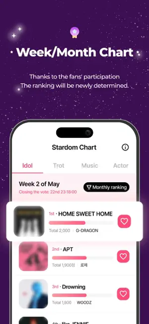

Stardom 的 Star Pass 到底值不值得掏钱？一份冷静的付费账本
把 Lite 和 Plus 两档订阅的每一项特权换算成时间账和效率账，分三种使用强度帮你算清楚这笔应援钱花得值不值。
开头直接抛问题
说实话，我打开 Stardom 的时候根本没打算付钱——去它的官网看了一圈发现就是个投票应援应用，能有什么付费点？结果在连刷了两周打榜、每天手动看三条广告攒银星之后，Star Pass 的订阅弹窗又跳出来了，我盯着 Lite 和 Plus 两档的价格看了三分钟，最后还是点了订阅。
冷静下来想，这笔账得认真算清楚。Stardom 到底是一个"不付钱也能用"的免费应用，还是一个"付了钱体验翻倍"的效率工具？Lite 和 Plus 差两倍价格，差的那部分值不值？更关键的是，你属于哪一类用户，到底该不该掏这个钱？
定价拆解：两档订阅，一份免费版
先把盘子摊开。从官方下载拿到 Stardom 之后，你会发现它的 Star Pass 是 2025 年 4 月上线的，分 Lite 和 Plus 两档月付订阅，价格以所在地区 App Store 为准，大致对标 $1.99 和 $3.99 两档。免费版当然能用，但权限边界在哪？
免费版给你的东西：每天固定数量的银星出勤奖励、基础投票次数、手动看广告额外攒星的渠道、完整的打榜参与权限。说白了就是"所有核心功能都能玩，但每一步都要手动攒资源"。
Lite 档多出来的：基础投票 Boost 加成——投出去的票带加权系数，还有银星获取量的部分提升。相当于"帮你攒星稍微快一点、投票稍微猛一点"，但广告还是得看，Boost 倍率也不是满配。
Plus 档是真正的质变：x3 倍 Boost（投 1 票算 3 票）、银星获取量 3 倍提升、看广告的环节自动跳过。这三件套凑在一起，就把免费版用户每天要花 10~15 分钟手动攒的星，压缩到了几乎零时间成本。

说句实话，这个定价设计得挺鸡贼的。Lite 刚好卡在"比免费好一点但又没好到哪去"的位置，Plus 才是那个"买了就回不去"的档位——但 Lite 的存在也合理，给那些只想在关键时刻冲一把、又不想长期订阅的人留了条路。
分三类人算账
轻度用户：偶尔打榜，一周打开两三次
如果你只追一档节目、每周参与一次投票、平时连出勤都经常忘——免费版完全够你用。每周那点投票次数，加上偶尔记得出勤签到攒的银星，撑得起轻度参与。花 $1.99 甚至 $3.99 去换一个你一周只用两三次的 Boost，算下来每小时的成本比 Lite 档的月价还贵，完全不划算。
Lite 档在这个使用强度下会特别尴尬——你花了钱，但 Boost 加成用不了几次，银星提升也没累积出量级，最后相当于"花钱买了个心理安慰，觉得自己好像更支持了"。
主力用户：每周固定打榜，追两三档节目
这是 Star Pass 真正的目标人群。每周至少三天打开应用，追两三档节目，出勤签到连续天数经常破 14 天——你已经把它当成日常了。
先算时间账：免费版每天看 3 条广告大概 1.5~2 分钟，Plus 帮你省掉这部分。再算星量账：Plus 3 倍银星获取意味着你每天攒的星直接翻三倍，原本需要两天攒够的量现在一天就到位。加上 x3 Boost 在周榜结算前关键时刻帮你冲排名——这时候 Plus 的价值就非常清晰了。
$3.99 一个月，按每天 0.13 美元算，换来的是每天省出 2 分钟 + 投票效率翻三倍。如果你每周至少用 10 次投票、看 15 条广告，这笔投入产出比是正的。而且连续出勤签到还有阶梯奖励，Plus 的 3 倍加成在月全勤奖上会额外放大——免费版可能拿到 500 星，Plus 用户拿到的就是 1500 星，差了一个量级。
Lite 档在这个区间的性价比要看你对 Boost 的需求强度。如果你主要想加快攒星速度但 Boost 倍率不重要，Lite 可能够用；但如果你在打榜关键期需要强力 Boost 冲排名，Lite 的基础加成跟 Plus 的 x3 比起来，差的不是一点点。
重度用户：多档节目同时追，选秀决赛期冲榜
这个群体不用我劝——直接上 Plus，不用考虑。多档节目同时追意味着投票配额严重不足，x3 Boost 相当于把你的投票力直接扩了两倍；选秀决赛期那几天要连续冲榜，Plus 3 倍攒星 + 免广告的组合，能让你把省下的时间全砸在投票上，而不是被广告打断节奏。
甚至可以把它理解成工具类付费——跟买笔记软件的高级版是一个逻辑：你不是在为"投票"这件事付费，而是在为"不被资源限制卡住"这件事付费。重度用户的时间密度已经高到不能容忍每天花几分钟看广告、还要手动管理银星过期的程度，Plus 帮你把这些重复劳动全部砍掉。
不付钱的替代方案
说了这么多付费的好，有没有什么路可以绕开 Star Pass 的门槛？
最直接的：降低使用频率。免费版的银星虽然慢，但如果你把打榜节奏从每周三次降到每周一次，攒的星其实也够。代价就是排名可能上不去——但如果排名对你没那么重要，这是最省事的免费替代。
第二种：临期星的集中消耗。去Stardom文档翻一下就知道，Stardom 的银星是有有效期的，Support 投票不消耗每日免费次数，全部靠银星或金星。当银星快过期的时候去 Support 投票集中消耗掉，相当于把本来要浪费的资源用在刀刃上。这个策略对轻度用户特别友好。
第三种：免费次数 + 零散金星加投。不订阅任何档位，只在关键期买少量金星做一次性加投。代价是单价偏高——零散买金星的性价比远低于 Plus 的持续订阅。
说实话，这些替代方案本质上都是"接受免费版的资源速度，用策略补效率"。如果你能接受这个节奏，Star Pass 就不是必需品；但如果免费版的资源速度让你觉得憋屈、觉得"我为什么不能直接往上冲"，那付钱只是时间问题。
结论：三秒对号入座
最后说人话。
闭眼付 Plus 的：每周至少三天打开、追两三档节目、打榜排名对你重要的主力用户和重度用户。$3.99 换三倍效率 + 零广告，这笔账不用算都知道赚。
再等等的：只追一档但每周会打个两三次的轻度偏主力用户。先试 Lite 档一个月，感受一下 Boost 和星量提升的边际效用，再决定要不要升 Plus。
永远不用付的：一周打开不超过两次、连出勤都经常忘的轻度用户。免费版能撑，花这个钱纯属浪费。
我自己属于第二类人，Lite 试用了一周后直接升到了 Plus。不是因为 Lite 不好，是因为试了之后发现——星量翻三倍这件事一旦体验过，就回不去了。
如果你还想深挖 Stardom 的各种玩法细节，同一套资料我也同步维护在GitHub、Gitee和GitCode三个仓库里，国内访问 Gitee 和 GitCode 会更顺。